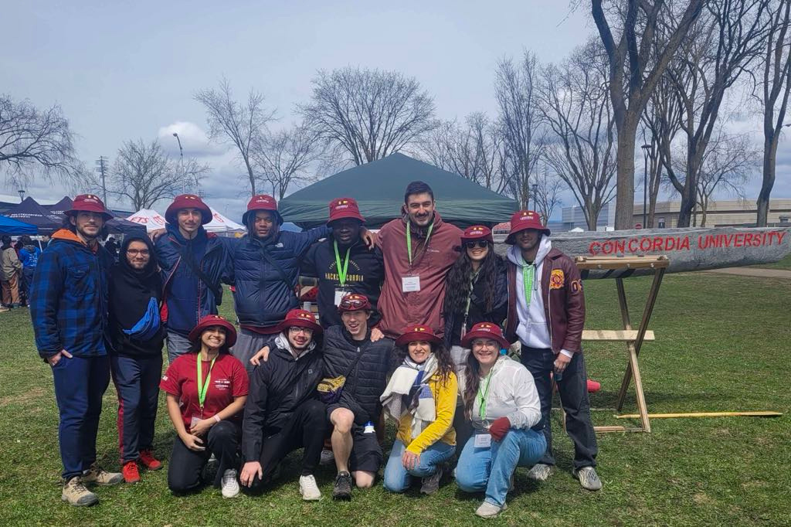
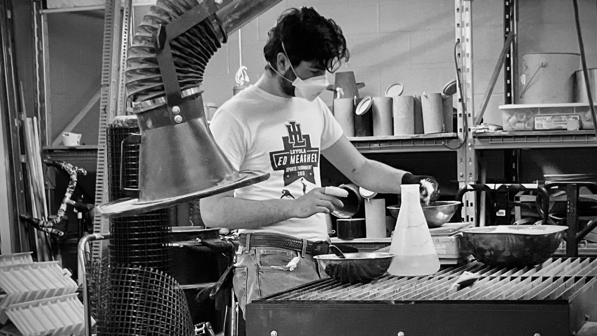
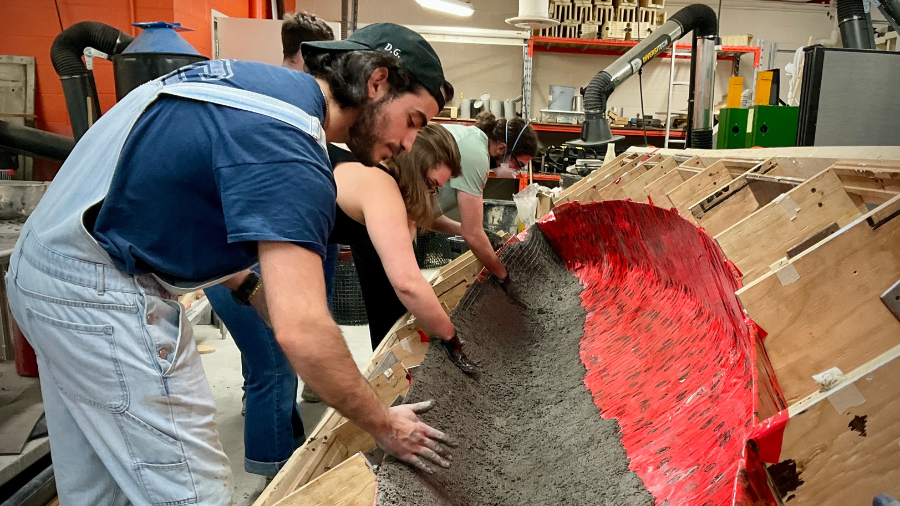
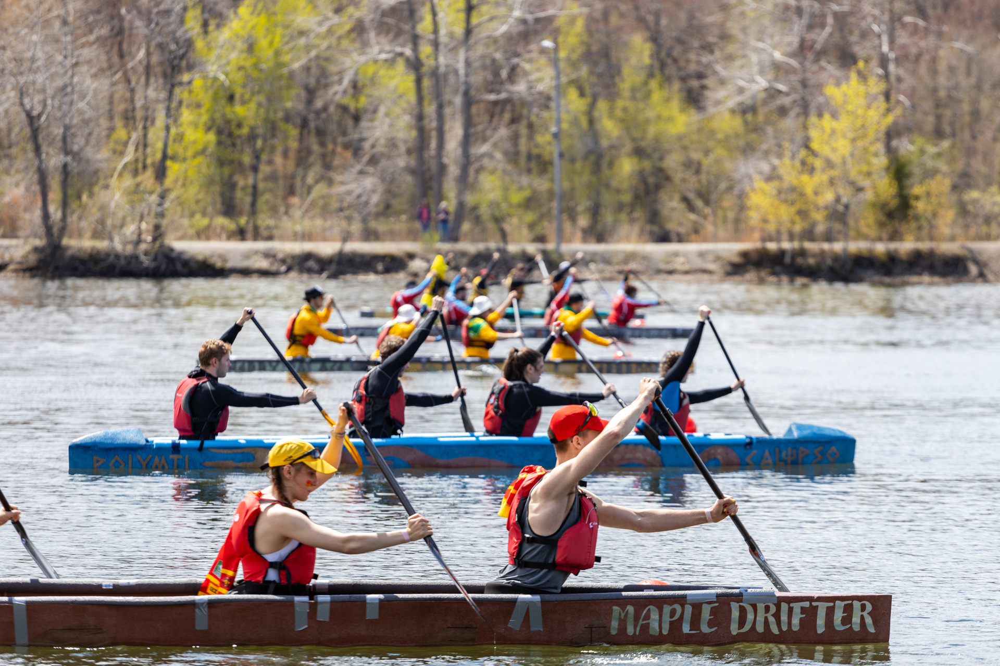

Après sept ans d’inactivité, j’ai relancé l’équipe de canoë de béton de Concordia. Guidée par les valeurs de curiosité, de courage, d’humilité et de joie, notre équipe a conçu, construit, transporté et fait courir un canoë de 6 mètres contre 20 autres universités canadiennes. À titre de capitaine, j’ai dirigé 12 étudiantes et étudiants jusqu’à la compétition nationale de Québec en 2024, puis je suis demeurée membre de l’équipe pour les itérations suivantes de conception du canoë, en vue des compétitions de Winnipeg et de Moncton en 2025 et 2026 respectivement.
Mon rôle de capitaine m’a donné le privilège de travailler avec un groupe exceptionnel de coéquipières et coéquipiers, et m’a permis de perfectionner mes compétences en résolution de problèmes, en leadership, en gestion de projet et en conception, tant pour le mélange de béton que pour les aspects structuraux du canoë et du moule.